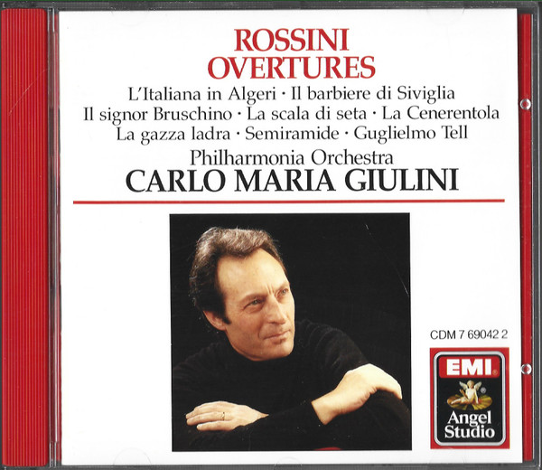

CD
Overtures · Ouvertüren: L’Italiana In Algeri · Il Barbiere Di Siviglia · Il Signor Bruschino · La Scala Di Seta · La Cenerentola · La Gazza Ladra · Semiramide · Guglielmo Tell
Gioacchino Rossini – Philharmonia Orchestra, Carlo Maria Giulini
Media: — · Sleeve: —
—
Personal
Discogs SuggestedCA$7.79
Discogs MedianCA$7.79
Discogs HighCA$7.79
- Physical Copy ID
- BB-CD-1351
- Year
- 1987
- Label
- EMI, Angel Records
- Catalog #
- CDM 7 69042 2
- Country
- USUS
- Genre / Style
- Classical · Romantic